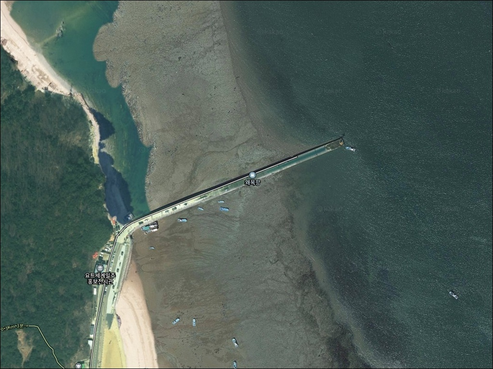
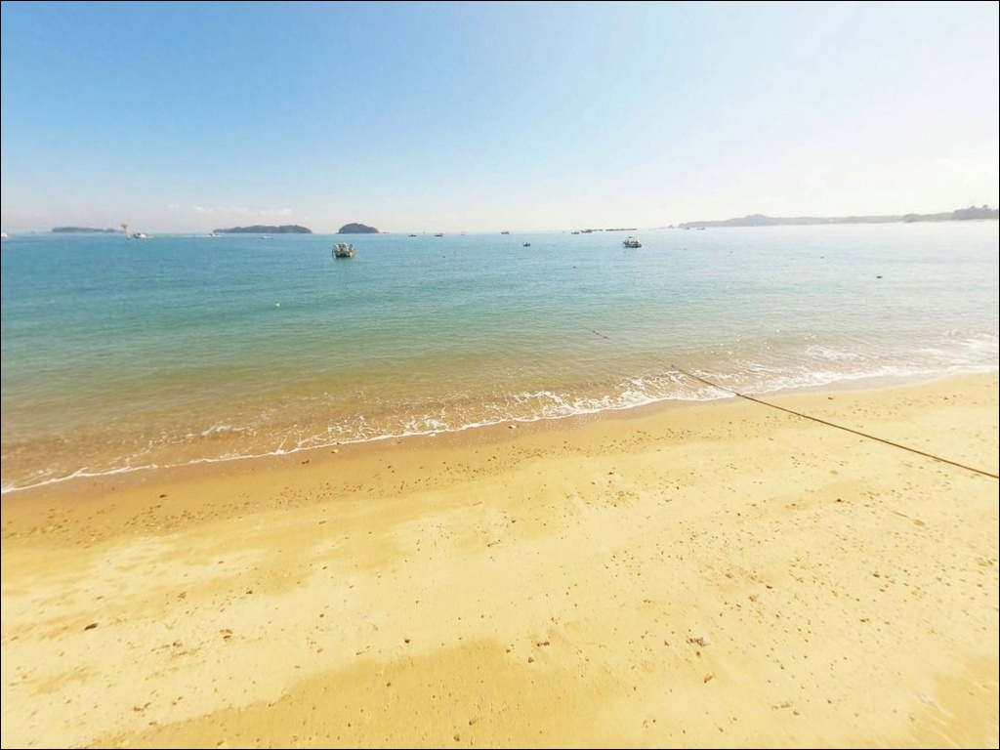
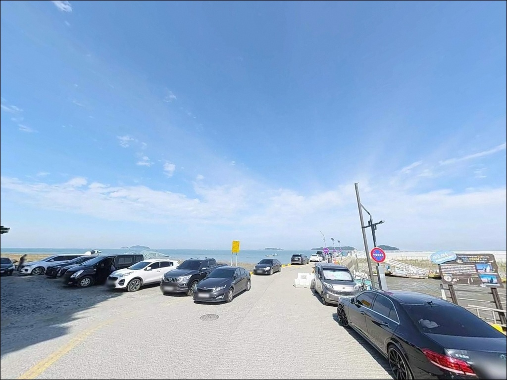
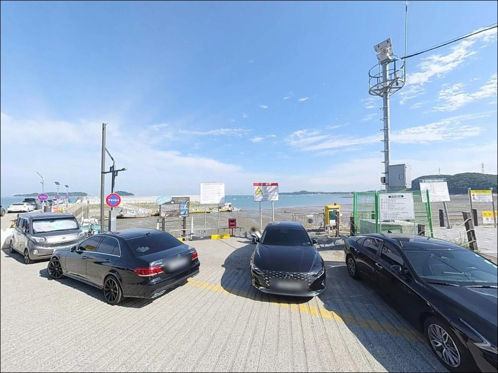
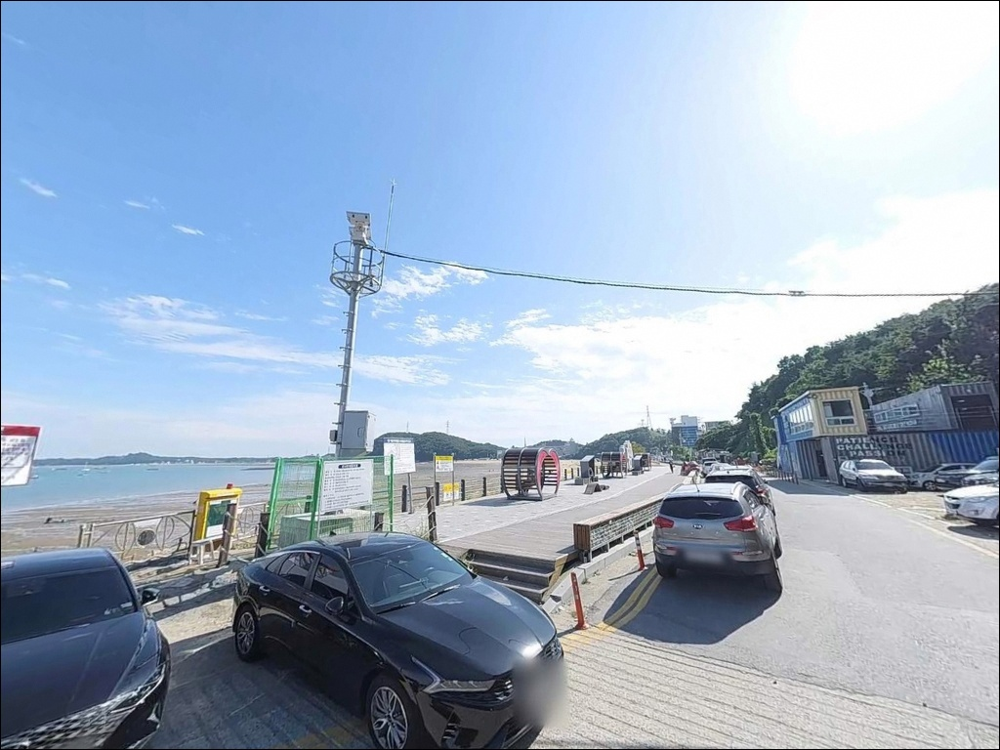
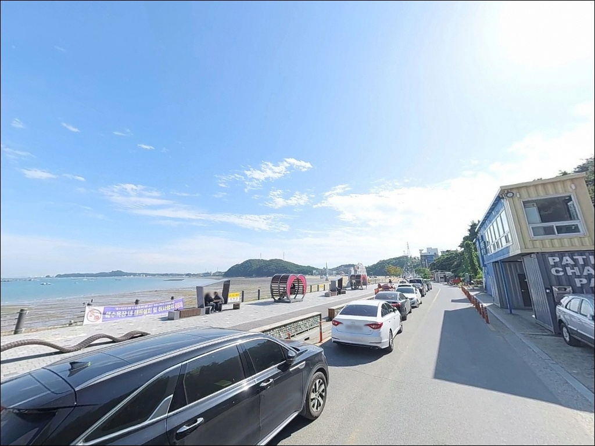
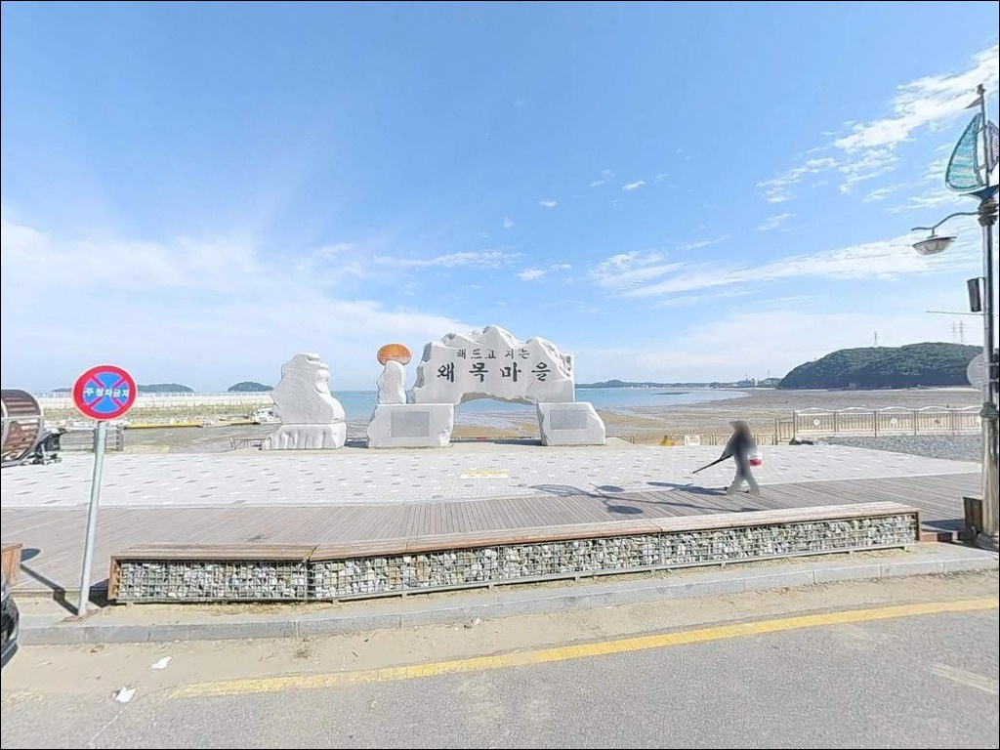
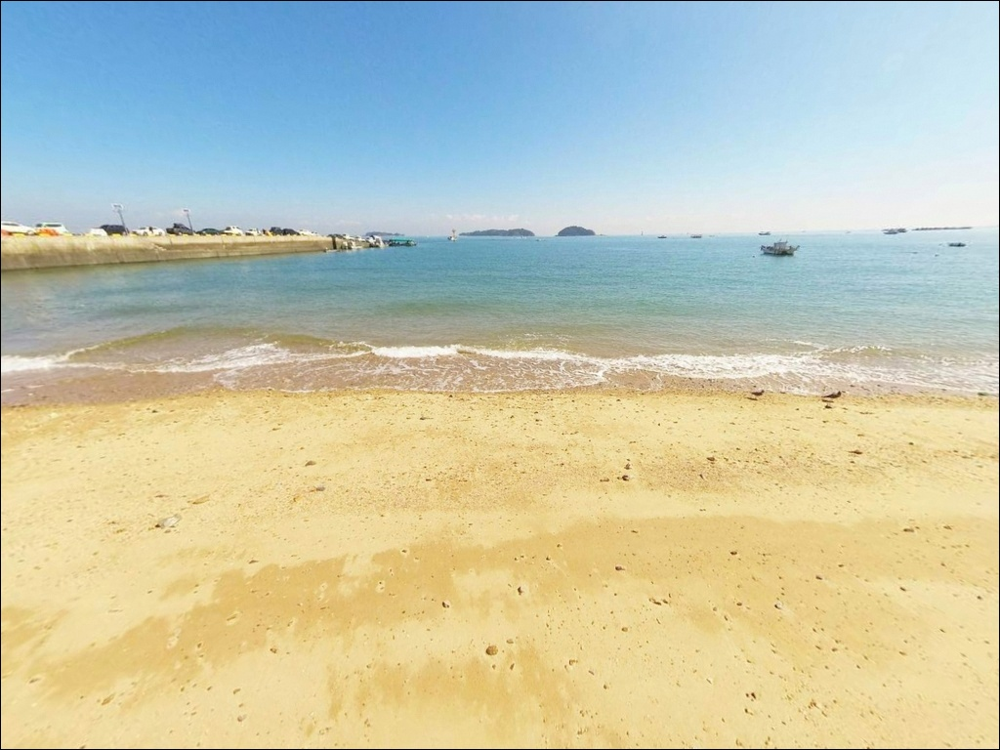
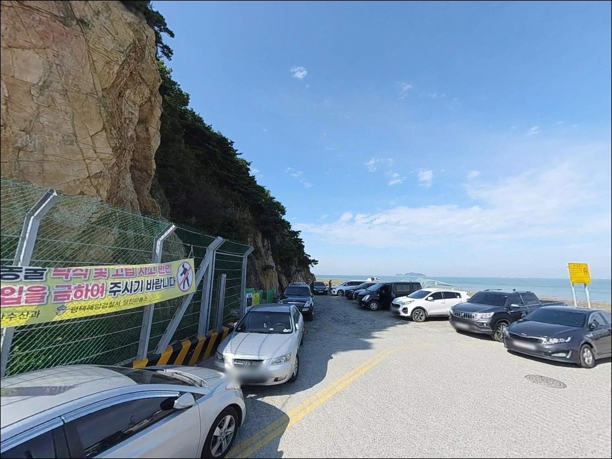

왜목항, 충남 당진시 풍경이 깊은 여운을 남기는 차박, 낚시 해안
이 페이지에는 광고(제휴 링크 포함)가 있으며, 광고 링크를 통해 구매하면 운영자가 판매 수익 또는 수수료를 받을 수 있습니다. 포인트 사진: 카카오맵 스카이뷰·로드뷰. 이 페이지의 지도·사진 이미지는 카카오맵의 실제 서비스 이미지와 다를 수 있습니다.


포인트 안내
왜목항
충남 당진시 석문면 교로리 844-80
만조 시간대에 맞춰 방파제에 들어서야 한다는 점,
서해를 처음 찾는 낚시인이라면
왜목항에서 먼저 실감하게 됩니다.
조수간만의 차가 큰 서해 특성이 이 포인트에서
특히 뚜렷하게 나타나며,
물때 판단이 낚시 자리와 안전을 동시에 결정하는
구조입니다.
석문반도 서쪽 끝에 자리한 왜목항은
서해에서 드물게 일출과 일몰을 같은 자리에서 볼 수 있는 지형으로
알려진 관광지이기도 합니다.
방파제와 선착장 구조를 중심으로
원투낚시·루어·찌낚시가 가능하고,
가을 시즌에는 갑오징어 에깅도
시도해볼 만한 포인트입니다.
이 글은 왜목항의
진입 환경, 지형 조건, 물때 기준, 낚시 스타일별 공략법,
차박 여건에 집중합니다.
조황 단정과 특정 어종 보장은
이 글의 범위에 포함되지 않습니다.

1. 진입 동선과 포인트 접근성
왜목항은 당진 IC 또는 송악 IC에서
석문방조제를 경유해 접근하는 구조입니다.
마을 진입로까지 왕복 2차선 포장도로가
이어지며, 급경사 구간이 없어
승용차부터 대형 SUV까지 진입 난이도는 낮은 편입니다.
주차는 왜목관광지 공영주차장을 이용하는 방식이
가장 안정적입니다.
대형버스 포함 약 100대 수용 규모의
포장된 무료 주차장으로,
방파제 낚시 포인트와의 거리도
도보로 부담 없는 수준입니다.
성수기(여름 해수욕장 운영 기간, 해맞이·해넘이 축제 시기)에는
주차 경쟁이 생길 수 있어
새벽 입장이나 비성수기 위주 방문이
동선 여유를 확보하는 방법입니다.
선착장 주변 공터는 어선 이동 동선과
겹치지 않는 자리를 먼저 확인해야 합니다.

2. 차박 환경과 야간 체류 여건
왜목항 일대는 관광지 성격이 강해
해변·광장 주변으로 가로등과 상가 조명이
어느 정도 갖춰진 편입니다.
야간에도 차량 통행이 간간이 이어지므로
조용한 노지 차박보다는
공영주차장 기반의 베이스캠프 성격에 가깝습니다.
비성수기 주중에는 유동 인구가 급격히 줄어
야간 프라이버시가 어느 정도 확보되는 편입니다.
석문반도 끝 외항 쪽은 바람 영향을 받기 쉬운 위치이므로
풍속 예보를 반드시 사전 확인하는 것이
하룻밤 체류 계획을 세우는 기준이 됩니다.
왜목마을 내 당진왜목오토캠핑장은
예약제로 운영되며
차박 및 도킹텐트 이용이 불가한 것으로
안내되어 있습니다.
낚시 후 차 안에서 간단히 머무는 용도라면
공영주차장 구획 내에서의 대기 방식이
현실적인 선택입니다.


3. 주변 편의시설 및 인프라 현황
왜목마을 내에는 횟집과 음식점이 여러 곳 자리하고 있어
출조 전후 식사 해결에 불편함은 적은 편입니다.
해수욕장 주변에 화장실이 운영되는 것이
확인되며, 여름 성수기 외 기간에는
운영 여부를 사전 확인하는 편이 좋습니다.
마을 내 편의점이 있는 것으로 소개되고 있으나
실제 운영 여부와 영업시간은
방문 전 재확인하는 것이 기본 준비입니다.
출조 전 식수, 얼음, 낚시 소품은
당진 시내에서 미리 갖추고 오는 것이
현장 당황을 줄이는 방법입니다.
주유는 왜목주유소가 마을 인근에 위치합니다.
응급 상황 시 면 소재지 내 보건지소와 약국이
확인되므로, 비상약품과 함께
위치를 미리 파악해 두면 도움이 됩니다.

4. 방문 전 반드시 챙겨야 할 준비사항
왜목항 방문에서 가장 먼저 확인해야 할 것은
물때입니다.
서해안 중에서도 석문반도 일대는 조차가 큰 구간으로,
간조 시에는 방파제 주변 갯벌이 상당히 드러납니다.
만조 전후에는 반대로 방파제 일부가
물에 잠길 수 있는 구조여서
바다타임에서 당진·석문 기준 물때를 확인하고
입장 타이밍을 잡는 것이 기본 전략입니다.
사리 전후에는 조류가 빠르게 흐르는 편이어서
찌낚시와 가벼운 루어 채비는 흘러내림이 심해집니다.
이 시기에는 봉돌 무게를 높인 원투 방식이
현장 적응성이 높은 선택입니다.
암초 구간이 있는 서해 포인트 특성상
여분 채비는 넉넉하게 준비하는 것이 좋습니다.
왜목등대 방향 방파제 끝단은
야간에 가로등 의존이 어려운 구간입니다.
헤드랜턴과 구명조끼는 기본 장비이며,
만조 진행 중 방파제 위 수위 변화에
항상 여유를 두고 움직이는 것이
안전 운용의 기준입니다.

5. 지형 조건에 따라 낚시 자리가 달라지는 이유
왜목항은 석문반도 서쪽 끝이 바다로 돌출된 구조 위에 있습니다.
이 위치 특성 덕분에 북쪽으로는 서해 열린 방향,
남쪽으로는 대호방조제 방면 내만 성격이
동시에 나타납니다.
방파제 외항 쪽과 내항 쪽의 수심·조류 편차가
비교적 뚜렷하게 나뉘는 구조입니다.
외항 방향은 조류 흐름이 직접 닿는 자리로
수심 변화가 빠르고 어종 회유가 활발한 편입니다.
반면 내항 쪽은 어선이 계류하는 구역이어서
낚시 가능 구간이 제한되며
조류도 상대적으로 잔잔한 편입니다.
원투낚시는 외항 방향으로 캐스팅하는 방식이
이 포인트 구조에 잘 맞습니다.
항 인근에는 암반 절벽과 갯바위 구간이 붙어 있으나
간조 시에만 접근 가능한 지형입니다.
안전을 위해 간출암 위치와 물 차오르는 속도를
미리 파악하고 진입하는 것이 기본이며,
최신 조황 검색은 출조 전 반드시 확인하시기 바랍니다.


6. 포인트 지형에 어울리는 낚시 스타일
원투낚시는 왜목항 방파제에서 가장 폭넓게 적용되는 방식입니다.
바닥 펄·혼합 지형을 공략하면
붕장어와 노래미, 망둥어를 기대해볼 수 있는 지형으로,
들물이 시작되는 타이밍에 외항 방향으로
채비를 내보내는 방식이 기본 접근법입니다.
루어낚시는 방파제 끝단과 항 입구 쪽에서
시도해볼 만합니다.
지그헤드에 소프트웜을 조합해
외항 쪽 바닥층을 탐색하는 방식이 어울리며,
우럭과 광어를 기대해볼 수 있는 지형 조건입니다.
야간에는 관광지 조명의 집어 효과를 활용해
방파제 초입~중간부에서 루어를 천천히 끌어오는 방식이
효율적입니다.
찌낚시는 만조 전후 조류가 완만해진 타이밍에
유리합니다.
학꽁치나 전갱이, 숭어 등 회유성 어종이
조명 아래로 모이는 야간 시간대에
외항 쪽에서 시도해볼 만한 방식입니다.
사리 전후 조류가 강할 때는
채비 흘러내림이 심해지므로
봉돌 무게를 올리거나 원투 방식으로 전환하는 편이 좋습니다.
가을 시즌에는 갑오징어 에깅도 시도할 수 있는 구조입니다.
방파제 끝단과 외항 테트라포드 인근이
에깅 채비를 활용해볼 만한 자리입니다.
좌대낚시 업체가 항 인근에 여러 곳 운영 중입니다.
별도 기술이나 장비 없이도 이용이 가능한 방식으로,
우럭 위주의 좌대 낚시는
방파제 낚시와 병행 계획에 넣어볼 만한 선택지입니다.
요금과 운영 일정은 예약 시 직접 확인하는 것이 기본입니다.

7. 대안 포인트와 플랜 B 동선
왜목항 조류가 너무 강하거나
성수기 인파로 방파제 공간이 여의치 않을 때는
장고항이 첫 번째 대안입니다.
차로 10~15분 거리에 있는 국가어항으로
방파제 규모가 더 크고 낚시 공간도 넉넉한 편입니다.
조황 정보도 왜목항보다 검색이 풍부해
출조 전 사전 파악이 수월합니다.
석문방조제 라인도 검토해볼 만합니다.
왜목항에서 차량으로 20분 내외 거리이며,
방조제를 따라 구간별로 포인트를 나눠
원투·루어 위주로 공략하는 방식이 흔한 패턴입니다.
조류가 방파제보다 완만한 구간을 골라
채비 흘러내림이 심할 때 이동하는 대안으로 활용할 수 있습니다.
한진포구도 당진 바닷가 루어낚시 포인트로
언급되는 곳입니다.
왜목항과 비교해 관광지 특성이 약하고
조용한 낚시 여건을 원하는 경우에
고려해볼 만한 대안입니다.

물때를 알고 가면
왜목항이 달라 보입니다
원투낚시와 루어낚시, 찌낚시를 가볍게 즐기는 낚시인이라면
왜목항의 방파제 구조는 무난하게 어울리는 편입니다.
진입과 주차가 편리하고 편의시설이 갖춰져 있어
서해 방파제 낚시를 처음 경험하는 경우에도
접근 부담이 낮은 포인트입니다.
다만 조차가 큰 서해 특성이
이 포인트에서는 특히 두드러집니다.
물때 계산 없이 사리 전후에 도착하면
조류가 너무 세거나 갯벌이 드러나
낚시 자체가 어려워지는 상황을 마주할 수 있습니다.
물때 확인, 진입 타이밍, 채비 선택,
이 세 가지를 갖추고 가는 것이
왜목항을 제대로 즐기는 조건입니다.
비성수기 주중 야간이라면
공영주차장에 자리를 잡고
방파제 야간 낚시와 서해 일몰을 함께 즐기는
담백한 하룻밤 차박 출조가 가능한 곳이기도 합니다.